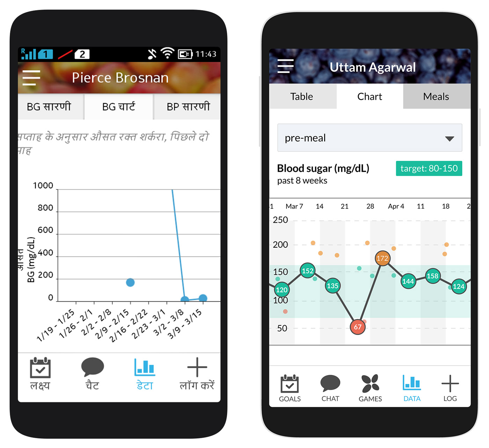

How helpful is a weekly average blood sugar value? Presenting progress to patients in a more meaningful way.
One of the first projects I took on at Gather Health was a redesign of the blood sugar chart in the Gather Health patient app. The existing chart was quite basic, showing only a weekly average over the last 8 weeks.
